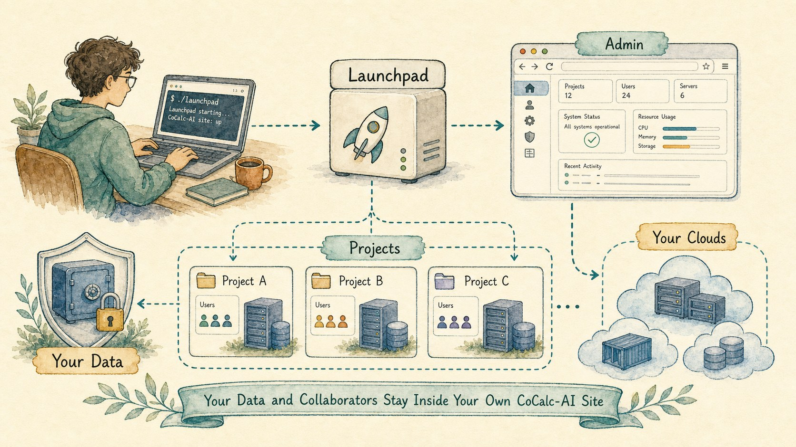
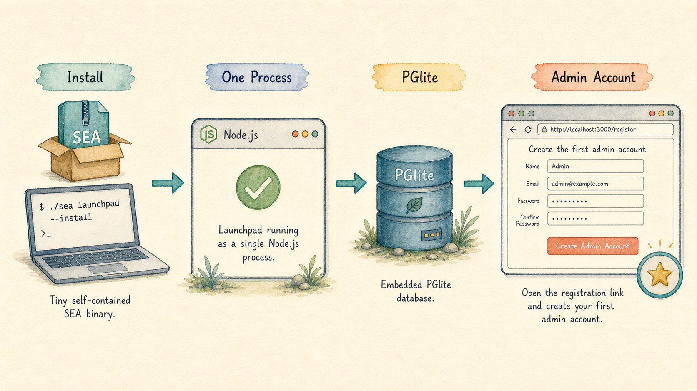
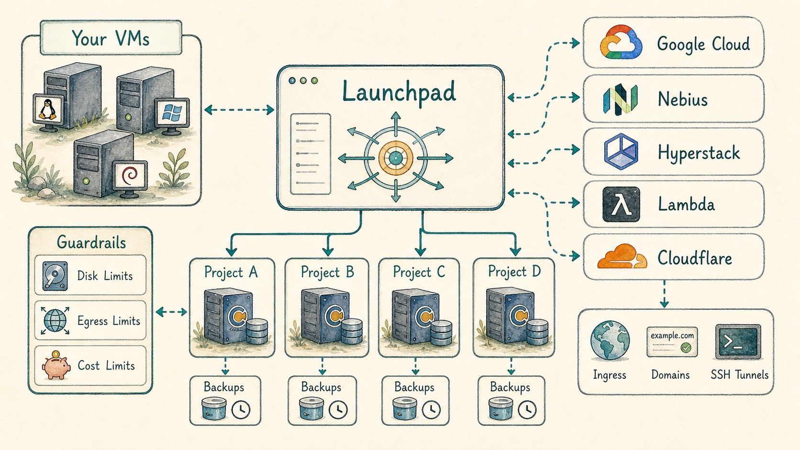
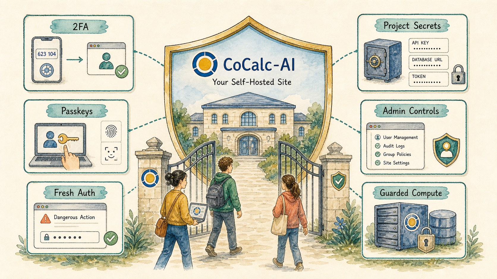
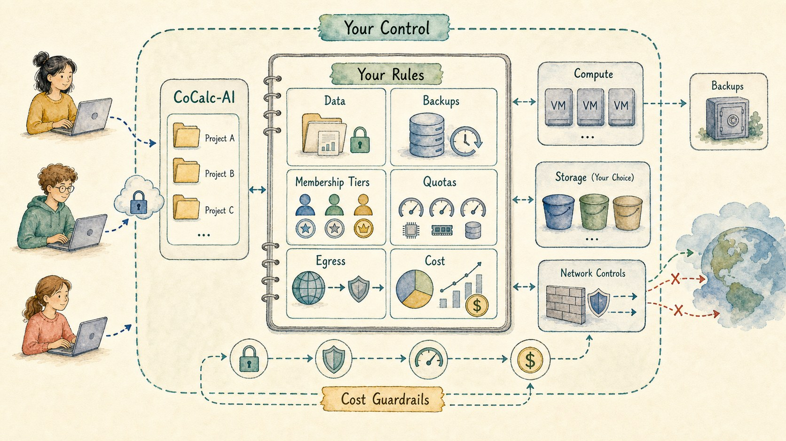
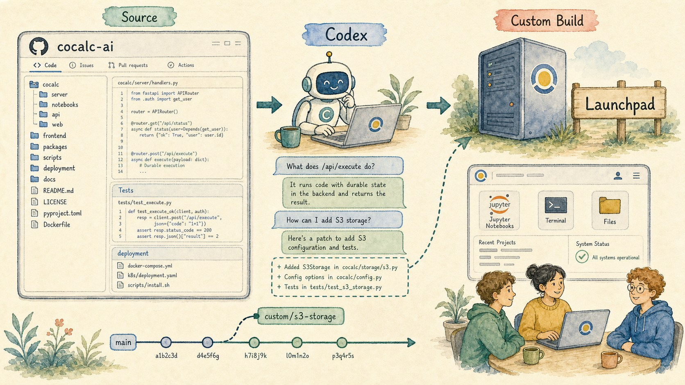

A CoCalc-AI field guide for independent teams
Self-Hosting CoCalc-AI
CoCalc Launchpad is the small-team way to run your own CoCalc-AI site: one tiny self-contained binary, an embedded database, your admin account, your compute, your security policy, and the same project experience as the public CoCalc cloud.

Self-hosting CoCalc-AI is not meant to be a stripped-down demo. The point is to run the same kind of collaborative notebook, terminal, file, chat, agent, course, app-server, snapshot, backup, and project host system yourself.
Launchpad is the entry point: simple enough for a lab, classroom, startup, or small research group. Rocket is the enterprise-grade step up when the same functionality needs to support many more active users and a larger operations footprint.
Run CoCalc where your work belongs
The public CoCalc cloud is convenient. Self-hosting is for groups that need stronger control: data residency, institutional rules, custom membership tiers, predictable cloud spend, private collaborators, or a specialized environment for one research program.
Launchpad gives you the CoCalc-AI product without making you become a cloud platform vendor. You run the control plane. You decide where projects run. Your users still get CoCalc's notebooks, terminals, chat, Codex integration, collaborative files, snapshots, backups, courses, and managed app workflows.
Good fits
- A research group with private data and custom software.
- A class or workshop that needs controlled compute.
- A startup that wants agent sandboxes without cloud markup.
- An institution that wants local policy and audit control.
- A software project that wants a ready-to-use hosted lab.
Install one small Launchpad binary
Launchpad is packaged as a Node single-executable application. The compressed binary is small enough to treat like an ordinary tool, not a cluster distribution. The current alpha install path is a single shell command from the public Launchpad page.
curl -fsSL https://software.cocalc.ai/software/cocalc-launchpad/install.sh | bash
cocalc-launchpadOn first start, Launchpad can use PGlite as an embedded database. That means the simplest installation is one Node.js process: no separate Postgres service just to make a small site real.
You visit the registration link, create the first admin account, and then configure the site from inside CoCalc.

Use your own VMs, clouds, and guardrails
A self-hosted CoCalc site separates control from compute. Launchpad runs the site and coordinates project hosts. Projects can run on your own VMs, or on public cloud providers that CoCalc knows how to provision and bootstrap.
The cloud provider layer already targets Google Cloud, Nebius, Hyperstack, Lambda, local development hosts, and self-hosted hosts. Cloudflare integration can provide ingress, custom-domain, and SSH routing pieces where you choose to configure it.
The important bit is policy. You can use public cloud resources with collaborators while applying your own limits for disk, memory, backups, egress, GPU access, and cost exposure.

Get the security work too
Launchpad users get CoCalc-AI's security hardening as part of the product, not as a separate exercise. That matters because a hosted collaborative agent environment is security-sensitive: users run code, share projects, store secrets, expose apps, create SSH access, and ask agents to operate on live work.
CoCalc-AI has been built with account 2FA, passkeys as second factors, fresh-auth gates for dangerous actions, project secrets, registration controls, admin policy surfaces, and guarded project compute in mind.
Self-hosting should not mean every group invents its own brittle auth and sandbox policy. Launchpad brings those defaults with it, while still letting the site owner decide how strict the local site should be.

Define your own site economy
Public hosted sandboxes often hide the real economics: storage, network egress, snapshots, backups, idle compute, GPUs, and human permissions all turn into a fixed product policy.
With Launchpad, you can define the product policy yourself. Create your own membership tiers. Choose the default project resources. Decide who can start expensive hosts. Set limits that match your budget instead of someone else's margin.
During the current alpha phase, Launchpad is easy to try. Long term, the intended shape is that Launchpad licensing is included with CoCalc memberships rather than priced like a separate enterprise platform.

Launchpad first, Rocket when the site grows
One-bay self-hosted CoCalc for small teams, labs, classes, and private groups.
Notebooks, files, terminals, chat, Codex, courses, apps, hosts, snapshots, and backups stay the same.
Enterprise-grade scale-up for many more active users, bays, project hosts, and operations controls.
Launchpad exercises the same architecture family, so growth is a deployment step rather than a product migration.
Keep the code within reach
CoCalc-AI's code is available at GitHub. That changes the support story. Codex can inspect the actual source, explain why a feature behaves the way it does, trace a bug, or help build a custom version for a site with unusual needs.
For a self-hosted deployment, that matters. You are not boxed into a black-box hosted agent product. You can ask questions all the way down to the source and decide whether to configure, patch, or extend the system.

Launchpad is the small, practical door into self-hosted CoCalc-AI. Rocket is the larger door when the same product needs serious scale. The story is the same in both cases: collaborative computing with agents, but under your control.